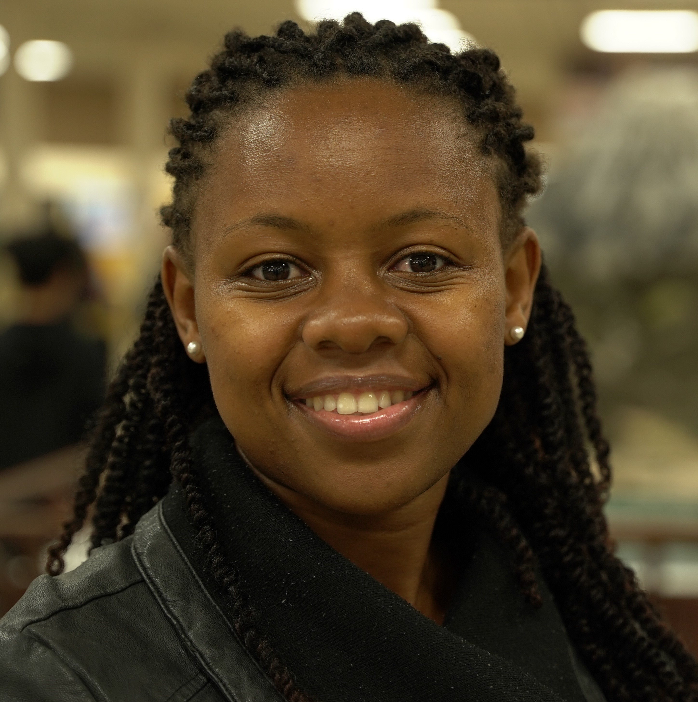

Angela Kitali, Ph.D.
Faculty lead · Assistant Professor · Faculty since 2021
Traffic safety, road-user behavior and accessibility
Angela Kitali studies transportation safety, road-user behavior and the use of data and AI in transportation engineering. Her research combines Bayesian and statistical models, machine learning and spatial analysis to investigate crash risk, injury outcomes, incident response and mobility. Earlier work on secondary crashes and traffic-control evaluation informs current studies of infrastructure information, emerging vehicle technologies and access.
She is an Assistant Professor at the University of Washington, Tacoma Campus and Associate Director for Education of the R-SEAT Center. Her research collaborations include AI-assisted infrastructure inventories, rural active transportation, privacy-preserving data sharing, shared-mobility use and transportation workforce preparation. She received the campus’s Distinguished Research Award in 2024.
Ph.D., Florida International University, 2020.
Education and research background
Her doctoral research, advised by Priyanka Alluri, examined the real-time identification and mitigation of secondary crashes. Her master’s research at the University of North Florida (2017), advised by Thobias Sando, evaluated pedestrian countdown signals using Bayesian methods.
She received her B.S. in Civil and Transportation Engineering from the University of Dar es Salaam in 2015.
Selected research
- Multimodal, multiscale signal–vehicle controlTechnical report · 2025 · Co-principal investigator
- Bridging the gap in rural active transportationProject · Ongoing · Principal investigator
- Privacy-preserving transportation data sharingProject · Ongoing · Co-principal investigator
- Explainable crash-type predictionJournal article · 2026 · Coauthor
- Integrating regional and local traffic controlResearch project · 2024–2025 · Co-principal investigator
- Geospatial analysis of injury severity on major roads in Ghana (2017–2020): implications for targeted injury prevention and control initiativesJournal article · 2026 · Coauthor
- Are Elderly Crash Victims in Rural Areas Receiving Timely Emergency Medical Services Access?Journal article · 2026 · Coauthor
- A Bayesian quantile-based analysis of micromobility usage and challengesJournal article · 2026 · Coauthor
- Fragmentation in U.S. Micromobility Governance: A Multi-Level Analysis of State Statutes and Local OrdinancesWorking paper · 2026 · Coauthor
- Safety Evaluation of the First Bus Rapid Transit System in TanzaniaJournal article · 2024 · First author
- Strategies to Identify and Mitigate Secondary Crashes Using Real-Time Traffic Data on Florida’s TurnpikeTechnical report · 2021 · Report coauthor